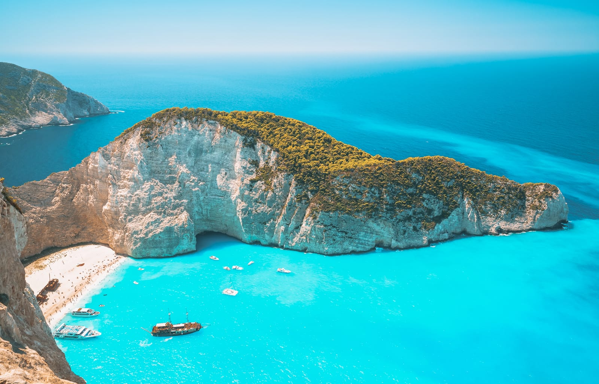

Work Experience
Enrolled Nurse
In a hospital that performs Ophthalmic, Oculoplastic and ENT procedures, I possess a variety of experience in nursing areas within the perioperative environment.
PACU/Recovery nursing involves direct patient care post-operatively. Assisting patients in recovering from general anaesthetic or local sedation. Monitoring patients’ vital signs and symptoms whilst providing appropriate pain management interventions. Providing patients proper education on post-operative when discharged home.
Anaesthetic nursing required me to work closely with the Anaesthetist. Assessing the patient and collecting any information that could impact on the proposed anaesthesia. Preparation of the environment and consumables for the daily list of surgeries. Providing clinical support to the Anaesthetist. Monitoring patients throughout anaesthetic administration. Management of patients’ airway.

Hobbies
I absolutely love my hobbies, which include baking, playing basketball, and practicing archery. Baking is a creative outle
for me; there's something incredibly satisfying about turning simple ingredients into delicious treats and experimenting with new recipes. Basketball keeps me active and engaged, and I thrive on the teamwork and strategy involved in every game.
Archery is a different kind of thrill—it’s all about focus and precision,
and I find it rewarding to see my skills improve with each practice session.
Together, these activities bring a wonderful balance of creativity,
fitness, and discipline to my life.
Travel
raveling the world has been a deeply fulfilling experience for me.
In Greece, I marveled at ancient ruins and beautiful coastlines. South Korea impressed me with its blend of tradition and modernity,
while Thailand captivated my senses with its vibrant culture and delicious food. Vietnam’s diverse landscapes and lively cities were equally unforgettable.
Each destination has broadened my horizons and enriched my appreciation for global diversity.
